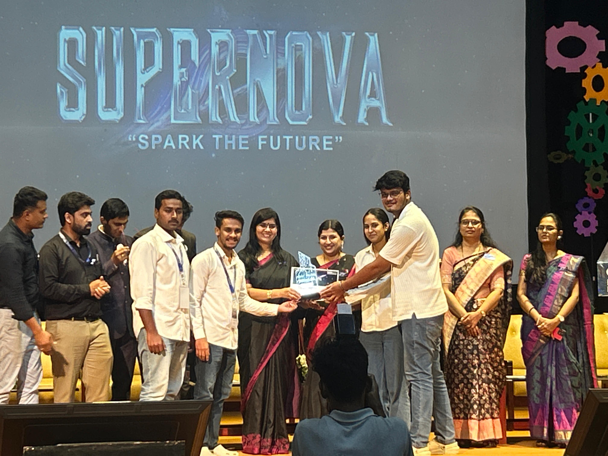
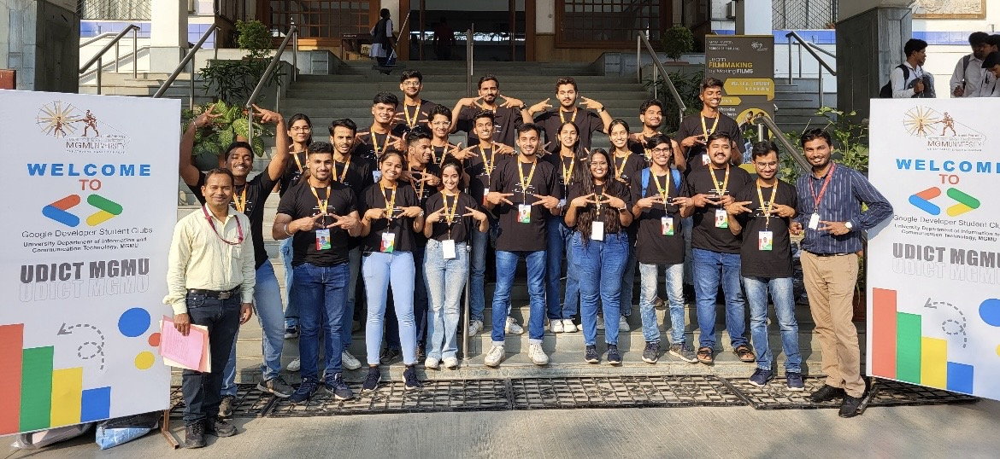
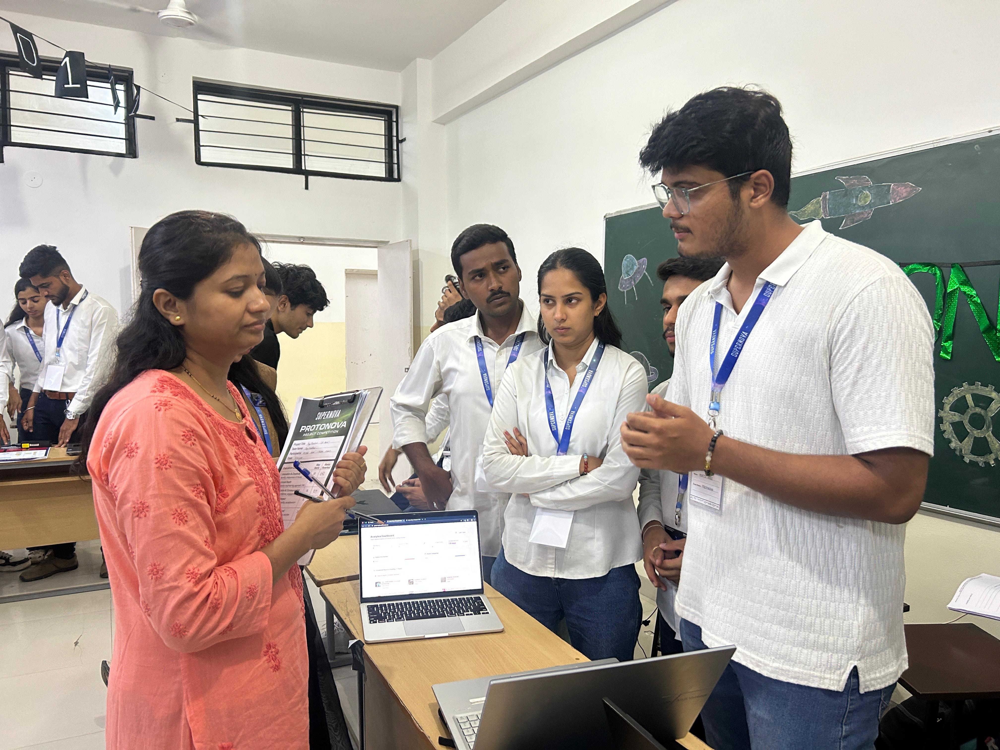
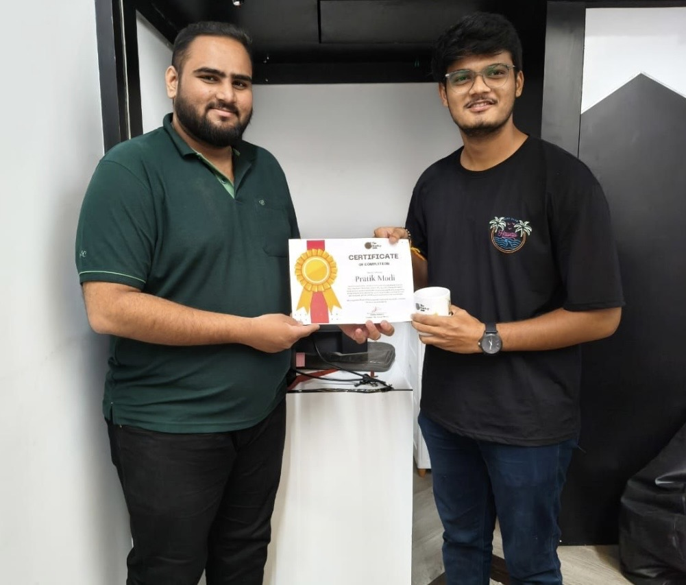

I am a final-year Information Technology student with a strong interest in data analytics, database development, and software solutions. Currently working as a SQL Intern at Yardi Systems, I develop database procedures, reports, and business solutions that transform complex requirements into practical outcomes. I enjoy solving real-world problems through technology, continuous learning, and innovation.




"Curiosity starts the journey, consistency creates the results."
— Pratik Modi